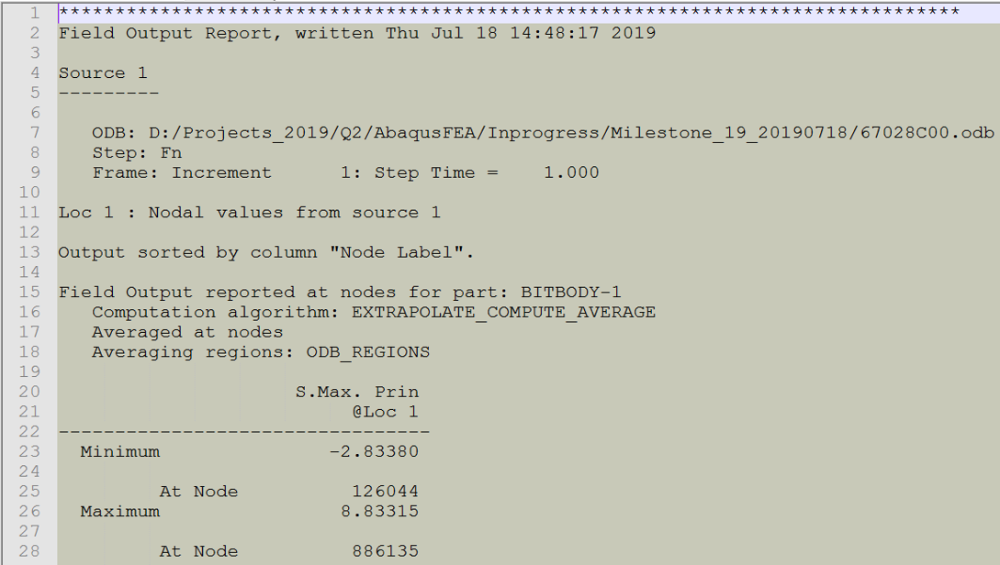

Abaqus FEA Automation App is an automation of the finite element analysis of the bitbody starting
from importing the CAD model to the generation of FEA report
required for the structural qualification of the Bit Design.
This app aids in building the FEA model, solving it and writing it to the FEA report at the click of a button and eliminates the earlier time consuming process
of accessing simulation results through a remote access to the Linux server.
Invoke the App
To invoke this app open a terminal in your abaqus working directory and type fearep and press enter.
Once done the app shows up as shown below.
Fig.1 - Graphical User Interface of the App.
The GUI of this app is a form with fields required for the FEA and writing the Report. As an example, all fields are populated
with some default entries (strings). The table below gives a brief description of the fields in the form.
Table 1: Field Description
Field Name
Description
Analyst Name
Enter the name of the Analyst/Engineer generating this report.
ECO Number
Enter the ECO number.
BIT Type:
Specify the Bit type
BIT Size:
Specify the Bit size
BIT BOM
Enter the BIT BOM.
GEMS Doc
Create a GeMS Record and enter the number.
GEMS Rev
Enter the appropriate revision number
DES File Name
Enter the appropriate DES file number without extension. Case Sensitive field.
PROE_StepFile_Name
Enter the appropriate Step file number without extension. Case Sensitive field.
Browse Utlity Files Folder
Browse to the utility files folder generated from ideas project
Material
Choose appropriate material as used in FEA from the 6 options provided.
Formation
Enter the type of formation. Required only for report.
WOB
Enter the Weight on Bit (klbf). Required only for report.
Total RPM
Enter the total RPM. Required only for report.
Table 2: Material Strength and limit for matrix material
Material Name
Material Ultimate Strength (ksi)
Limit Strength (ksi, 50% Material Strength)
GM6+GB1
67.5
33.75
GM6+GB25
77.5
38.75
GM19+GB1
77.5
38.75
Table 3: Material Strength and limit for steel material
Material Name
Material Ultimate Strength (ksi)
Limit Strength (ksi, 80% Material Strength)
4130E
80
64
4140
110
88
4130M
120
96
Run FEA & Generate Report
Files required for running the application have been tabulated below,
File Name Name
Description
User Action
ProE Step file (*.stp)
CAD File of Bit Body in step format
Yes. Copy in current directory
DES file (*.des)
ProE parameter data file
Yes. Copy in current directory
Utility Files Folder
Generated from Ideas Simulation.
Yes. Browse to location.
Generate Report Only
Files required for running the application have been tabulated below,
File Name Name
Status
User Action
Mesh Image (for eg.- MESH_66593a00_COT35.png)
Expected in Current Directory (From Macro "o01_printMesh.py" of script generator)
Expected in Current Directory (From Macro "o02_printConstraint.py" of script generator)
None
Max. Principal Stress Image (for eg.- MaxP66593a00_COT35.png)
Expected in Current Directory (From Macro "o04_printStressMaxP.py" of script generator)
None
maxPstress.txt
Expected in Current Directory (From Macro "o04_printStressMaxP.py" of script generator)
None
Bit Body Face Image (BitBodyFaceView.png)
Expected in Current Directory (From Macro "o04_printStressMaxP.py" of script generator)
None
Bit Body Right Image (BitBodyRightView.png)
Expected in Current Directory (From Macro "o04_printStressMaxP.py" of script generator)
None
cutterfcut_bk.txt
Expected in utility_files Directory
None
cutterfn_bk.txt
Expected in utility_files Directory
None
BHA (for eg.-bha.png)
Expected in utility_files Directory
None
Well (for eg.-bha.png)
Expected in utility_files Directory
None
Transverse Acceleration (for eg.- ax_bit_1_1.png)
Expected in utility_files Directory
None
Transverse Acceleration (for eg.- ay_bit_1_1.png)
Expected in utility_files Directory
None
WOB (for eg.-wob.png)
Expected in utility_files Directory
None
WOB (Box & Whisker Plot) (for eg.-wob_bk.png)
Expected in utility_files Directory
None
Running App
Open a New Folder for your Project and copy the required CAD and DES or CFB file here.
Open a new terminal from this folder and type "autofea" this will invoke the app
Fill in the fields with adequate information as listed in
Browse to the utility_files folder generated from ideas simulation
Enter the DES or CFB file and CAD file names correctly.
Select appropriate material for analysis
Fig.1 - Graphical User Interface of the App.
Press "Run FEA & Generate Report". This will automatically invoke Abaqus and start building the FEA model.
Once the FE Model is ready it will automatically fire the run with 4 processors.
Fig.2 - Job Fired Successfully.
On completion of the job run, the post processing script o4-o5.py will automatically run and extract
results required for report generation.
Close Abaqus. You will be prompted to save it. It is a good practice to save this cae file for your backup.
After closing abaqus the control then moves back to the main GUI and report generation starts automatically
On Successful completion the user shall see a message on screen as shown below,
Fig.3 - Successful Run Message.
Additional Notes
o4-o5.py script extracts the stress plot and in addition to that
writes a report file to extract max value of stress as shown in image below.

Fig.4 - "maxstress.rpt" generated by o4-o5.py script
The RESET button will load the form with preset default (sample) values
Error Handling
The app has a robust exception handling mechanism for the errors encountered during its operation.
The errors can be classified in two major types
Abaqus Environment Errors
Other App Errors
Abaqus Environment Errors
Most common type of error seen inside abaqus environment is meshing error encoutered due to failure of
meshing by the Abaqus software. When viewed inside Abaqus environment using Mesh Tools it can be easily seen that
these erros occur due to some bad surfaces in the CAD geometry. These errors can be fixed by defeaturing the unwanted faces or edges.
These bad faces can be seen inside Abaqus environment from the Meshing Menu.
Fig.1 - Mesh gaps/intersections as viewed in Abaqus Environment.
Very often these are small surfaces or fillets which may not significant from FEA point of view and
hence it is recommended that the user should try and remove these surfaces from the CAD geometry.
The other error seen in abaqus environment is failure of Pocket set creation.
Look at the figure below,
Fig.2 - Bad or Failed Pocket Set
Fig.3 - A Good Sample Pocket Set
Other App Errors
Mostly errors occur due to a missing data
like image files or other required files
Inadequate user permissions to read/write/execute into the working directory
Missing file errors are easily handled by the app’s robust exception handling mechanism.
Fig.4 - Missing File Warning Message.
In case there is a problem with printing the pdf report
the app will show a warning about missing information (like blank slide) as below,
Fig.5 - Warning message due to problem with pdf generation
Please send your queries to cpchelp@slb.comwith autofea in subject line.
Please attach the logfile.txt and fea.cfg generated by the app in your current directory along with the email.